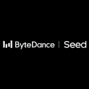

Large language models: understanding, generation, and reasoning
Behind the chat models you use daily are connected questions: how text becomes model input, what data teaches the model, why different training changes its answers, and how to tell whether it improved.
Research can begin with any one of those steps.
A large language model turns text into tokens, learns relationships from large text collections, and generates continuations from context. One model can support questions, summaries, code, and translation. Tasks are often expressed through instructions and examples instead of a separately trained classifier.
The field studies both how capabilities emerge from data and training and how to use them for particular tasks. Pretraining, instruction tuning, preference learning, and search at inference time affect different stages. Ask what a paper changes and how it tests that change before interpreting a claim of better answers.
- Turn scattered text into summaries, structured information, or answers that can be queried further.
- Generate, revise, and explain text and code from natural-language requests.
- Express different tasks through one language interface and study transfer to new requirements.
Separate architecture, training objectives, and usage: long answers, instruction following, and correct reasoning require different tests.
- 01Text → tokens
- 02Representations and attention
- 03Next-token distribution
- 04Select and append a token
Research milestones
- 2017
Architecture: exchange information across positions
Transformer organizes sequence computation through attention. Originally studied for translation, it became an important building block for later pretrained models.
- 2018
Transfer: learn from text, then adapt to tasks
GPT connects generative language pretraining with supervised task adaptation, reusing learned representations.
- 2020
Prompting: put task examples in context
GPT-3 studies scale and few-shot prompting without updating parameters for each evaluation task.
- 2022
Behavior: train answers toward human intent
InstructGPT combines demonstrations, preference comparisons, and reinforcement learning. How a model answers becomes a training problem of its own.
Key concepts
- Token
- A discrete piece of input: a word, character, or part of a word. Different tokenizers can assign different lengths to the same text.
- Autoregressive generation
- Predict a token from preceding context, append it, and continue. During training, predictions at multiple positions can be computed in parallel.
- Pretraining and post-training
- Pretraining establishes broad capabilities; post-training adjusts task skills or behavior. Instruction tuning and preference learning are common post-training methods.
- In-context learning
- Instructions and examples in the input alter performance without updating weights during that use. This differs from fine-tuning on the examples.
Tokenization, representations and next-token prediction
Use the Hugging Face LLM Course to meet models, tokenizers, and datasets. Inspect the tokenization of a sentence and the model's inputs and outputs. For embeddings, matrix operations, or gradients, revisit foundations.
Then follow text, tokens, attention, and outputs through LLMs from Scratch. The repository accompanies the book; begin with the module you want to understand.
Pre-training, post-training and inference efficiency
How capabilities are learned: study data, objectives, and optimization. Once you can explain training code, enter Stanford CS336, 2025 through a topic in data, training, or systems.
How a model becomes better for a task: study fine-tuning, feedback, and evaluation. Fix the task and evaluation before comparing base and adapted models. Rewards and policy updates connect to RL.
Why models are slow and expensive: see efficiency and systems. Scale, context, precision, caching, and hardware jointly determine feasible experiments.
Language representations, semantics, and tasks also deserve study. CS224N connects them with model methods.
Transformer, BERT and LoRA
Read Transformer for architecture, BERT for pretraining objectives and representations, and LoRA for reducing trainable adaptation parameters. Pair a paper with Mu Li's readings.
Then read Jiaxuan Zou's pretraining and scaling as methodology and scientific perspective to see how a researcher connects scale, data, stability, and problem selection.
Inspect a small model’s tokens and outputs
Choose a small model you can run and a small text set. Record tokenization, input length, outputs, and errors. Change one setting and observe its effect. Check the selected tutorial's model and device requirements.
For tool use, continue to agents; for image understanding, see multimodal models.
Position encoding, optimizers and scaling
For positional encodings and optimizers, see Jianlin Su; for scaling experiments and extrapolation, see Jiaxuan Zou. Courses and projects are in the LLM catalog.
Model families and technical reports
Compare reports through a concrete question: how data is chosen, how training objectives change, how reasoning is measured, or where compute is spent.
Tencent · Hunyuan
- Hunyuan-Large ↗2024 · Technical report
MoE architecture, synthetic data and training at scale.
Xiaomi · MiMo
- MiMo ↗2025 · Technical report
How pre-training and post-training jointly improve reasoning.
- MiMo-Audio ↗2025 · Technical report
Speech representations, audio language modeling and speech-task evaluation.
- MiMo-V2-Flash ↗2026 · Technical report
Model architecture, attention design and inference efficiency.

ByteDance · Seed- Seed1.5-Thinking ↗2025 · Technical report
Reasoning RL, training stability and capability evaluation.
Moonshot AI · Kimi
- Kimi K2 ↗2025 · Technical report
MoE, optimization and large-scale training for tool interaction.
- Kimi K2.5 ↗2026 · Technical report
Vision-language training, tool use and parallel agents.
DeepSeek
- DeepSeek-V3 ↗2024 · Technical report
MoE, MLA, load balancing and FP8 training.
- DeepSeek-R1 ↗2025 · Technical report
Reasoning through RL, cold-start data and distillation.
- DeepSeek-V3.2 ↗2025 · Technical report
Sparse attention, reasoning RL and synthetic agent tasks.
- DeepSeek-V4 ↗2026 · Technical report
Hybrid compressed attention, long context and the post-training pipeline.
Alibaba · Qwen
- Qwen2.5 ↗2024 · Technical report
Pre-training data, instruction tuning and capabilities across model sizes.
- Qwen2.5-VL ↗2025 · Technical report
Dynamic resolution, video understanding and visual localization.
- Qwen3 ↗2025 · Technical report
Dense and MoE models, thinking modes, multilingual training and distillation.
- Qwen3-Omni ↗2025 · Technical report
Unified processing of text, images, audio and video.
MiniMax
- MiniMax-01 ↗2025 · Technical report
Lightning Attention, MoE and long context.
- MiniMax-M1 ↗2025 · Technical report
Long-context reasoning and test-time computation.
Z.ai · GLM
Google DeepMind
- Gemini 1.5 ↗2024 · Technical report
Long-context retrieval, multimodal understanding and million-token evaluations.
- Gemini 2.5 ↗2025 · Technical report
Training and evaluation of reasoning, multimodal and agent capabilities.
OpenAI
Anthropic
- Claude Sonnet 4.5 ↗2025 · System card
Coding and agent evaluations, alignment and model behavior tests.
Meta AI
- Llama 3 ↗2024 · Technical report
Data mixtures, pre-training, post-training and large-scale infrastructure.
Representative papers
Read these four papers for architecture, pretraining, in-context learning, and post-training. Identify the stage each changes.